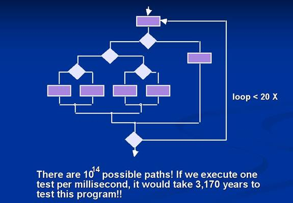
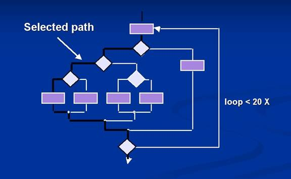

|
SE 616 Introduction to Software Engineering |
|
Lecture 7 |
Chapter 13: Software Testing
Strategies
Strategic Approach to Software Testing
- Testing begins at the component level and works outward toward the integration of the entire computer-based system.
- Different testing techniques are appropriate at different points in time.
- The developer of the software conducts testing and may be assisted by independent test groups for large projects.
- The role of the independent tester is to remove the conflict of interest inherent when the builder is testing his or her own product.
- Testing and debugging are different activities.
- Debugging must be accommodated in any testing strategy.
- Make a distinction between:
- verification - are we building the product right?
- validation - are we building the right product?
Criteria for Completion of Testing

- Version of the failure model, called a logarithmic Poisson execution-time model, takes the form
f(t) = (1/p) ln [ lopt + 1]
where
f(t) = cumulative number of failures that are expected to occur once the software has been tested for a certain amount of execution time, t,
lo = the initial software failure intensity (failures per time unit) at the beginning of testing,
p = the exponential reduction in failure intensity as errors are uncovered and repairs are made.
- The instantaneous failure intensity, l(t) can be derived by taking the derivative of f(t)
l(t) = 1o/( lopt + 1)
- Testers can predict the drop-off of errors as testing progresses
- Actual error intensity can be plotted against the predicted curve
- If the actual data gathered during testing and the logarithmic Poisson execution time model are reasonably close to one another over a number of data points, the model can be used to predict total testing time required to achieve an acceptably low failure intensity
Strategic Testing Issues
- Specify product requirements in a quantifiable manner before testing starts.
- Specify testing objectives explicitly.
- Identify the user classes of the software and develop a profile for each.
- Develop a test plan that emphasizes rapid cycle testing.
- Build robust software that is designed to test itself (e.g. uses anitbugging).
- Use effective formal reviews as a filter prior to testing.
- Conduct formal technical reviews to assess the test strategy and test cases.
Unit
Testing
Focuses
verification effort on the smallest unit of software designthe software
component or module
- Black box and white box testing.
- Module interfaces are tested for proper information flow.
- Local data are examined to ensure that integrity is maintained.
- Boundary conditions are tested.
- Basis path testing should be used.
- All error handling paths should be tested.
- Drivers and/or stubs need to be developed to test incomplete software.

- Errors to be uncovered:
(1)
misunderstood or incorrect arithmetic precedence
(2) mixed mode operations
(3) incorrect initialization
(4) precision inaccuracy
(5) incorrect symbolic
representation of an expression
- Test cases should uncover errors such as:
(1)comparison of different data types
(2) incorrect logical operators
or precedence
(3) expectation of equality when
precision error makes equality unlikely
(4) incorrect comparison of
variables
(5) improper or nonexistent loop
termination
(6) failure to exit when
divergent iteration is encountered
(7) improperly modified loop
variables
Integration Testing
- Top-down integration testing - Incremental approach to construction of program structure
- Depth-first integration would integrate all components on a major control path of the structure
- Breadth-first integration incorporates all components directly subordinate at each level, moving across the structure horizontally

- Procedure
- Main control module used as a test driver and stubs are substitutes for components directly subordinate to it.
- Subordinate stubs are replaced one at a time with real components (following the depth-first or breadth-first approach).
- Tests are conducted as each component is integrated.
- On completion of each set of tests and other stub is replaced with a real component.
- Regression testing may be used to ensure that new errors not introduced.
- Bottom-up integration testing

- Low level components are combined in clusters that perform a specific software function.
- A driver (control program) is written to coordinate test case input and output.
- The cluster is tested.
- Drivers are removed and clusters are combined moving upward in the program structure.
- Regression testing (check for defects propagated to other modules by changes made to existing program)
- Representative sample of existing test cases is used to exercise all software functions.
- Additional test cases focusing software functions likely to be affected by the change.
- Tests cases that focus on the changed software components.
- Smoke testing
- Conducted Daily
- Benefits:
- Integration risk is minimized
- Because smoke tests are conducted daily, incompatibilities and other show-stopper errors are uncovered early
- Quality of the end-product is improved
- Because the approach is construction (integration) oriented, likely to uncover both functional errors and architectural and component-level design defects
- Error diagnosis and correction are simplified
- Errors uncovered during smoke testing are likely to be associated with "new software increments"
- Progress is easier to assess
With each passing day, more of the software has been integrated and more has been demonstrated to work
- Procedure:
- Software components already translated into code are integrated into a build.
- A series of tests designed to expose errors that will keep the build from performing its functions are created.
- The build is integrated with the other builds and the entire product is smoke tested daily (either top-down or bottom integration may be used).
Integration Test Documentation
- Test Specification - overall plan for integration of the software and a description of specific tests
- Contains:
- test plan
- test procedure
- schedule for integration, the development of overhead software
- test environment and resources are described
- records a history of actual test results, problems, or peculiarities
- Becomes part of the software configuration
- Testing is divided into phases and builds that address specific functional and behavioral characteristics of the software
- General Software Test Criteria
- Interface integrity (internal and external module interfaces are tested as each module or cluster is added to the software)
- Functional validity (test to uncover functional defects in the software)
- Information content (test for errors in local or global data structures)
- Performance (verify specified performance bounds are tested)
Object-Oriented Testing
- begins
by evaluating the correctness and consistency of the OOA and OOD models
- testing
strategy changes
- the concept of the unit broadens due to
encapsulation
integration focuses on classes and their execution across a
thread or in the context of a usage scenario
- validation uses conventional black box methods
- test
case design draws on conventional methods, but also encompasses special
features
Broadening the View
of Testing
- Review of OO analysis and design models
is useful because the same semantic constructs (e.g., classes,
attributes, operations, messages) appear at the analysis, design, and
code level.
- Therefore,
a problem in the definition of class attributes that is uncovered during
analysis will circumvent side effects that might occur if the problem
were not discovered until design or code (or even the next iteration of
analysis).
Testing the CRC
Model
1. Revisit the CRC model and the
object-relationship model.
2. Inspect the
description of each CRC index card to determine if a delegated responsibility
is part of the collaborators definition.
3. Invert the
connection to ensure that each collaborator that is asked for service is
receiving requests from a reasonable source.
4. Using the inverted
connections examined in step 3, determine whether other classes might be
required or whether responsibilities are properly grouped among the classes.
5. Determine whether
widely requested responsibilities might be combined into a single
responsibility.
6. Steps 1 to 5 are applied iteratively to each class and through each evolution of the OOA model.
OOT Strategy
class testing is the equivalent of unit testing
- operations within the class are tested
- the state behavior of the class is examined
integration applied three different strategies
- thread-based testingintegrates the set of classes
required to respond to one input or event
- use-based testingintegrates the set of classes
required to respond to one use case
- cluster testingintegrates the set of classes
required to demonstrate one collaboration
Validation Testing
- Ensure that each function or performance characteristic conforms to its specification.
- Deviations (deficiencies) must be negotiated with the customer to establish a means for resolving the errors.
- Configuration review or audit is used to ensure that all elements of the software configuration have been properly developed, cataloged, and documented to allow its support during its maintenance phase.
Acceptance Testing
- Making sure the software works correctly for intended user in his or her normal work environment.
- Alpha test (version of the complete software is tested by customer under the supervision of the developer at the developer's site)
- Beta test (version of the complete software is tested by customer at his or her own site without the developer being present)
System Testing
- Recovery testing (checks the system's ability to recover from failures)
- Security testing (verifies that system protection mechanism prevent improper penetration or data alteration)
- Stress testing (program is checked to see how well it deals with abnormal resource demands quantity, frequency, or volume)
- Performance testing (designed to test the run-time performance of software, especially real-time software)
Debugging
- Debugging (removal of a defect) occurs as a consequence of successful testing.
- Some people are better at debugging than others.
- Common approaches:
- Brute force (memory dumps and run-time traces are examined for clues to error causes)
- Backtracking (source code is examined by looking backwards from symptom to potential causes of errors)
- Cause elimination (uses binary partitioning to reduce the number of locations potential where errors can exist)
Bug Removal Considerations
- Is the cause of the bug reproduced in another part of the program?
- What "next bug" might be introduced by the fix that is being proposed?
- What could have been done to prevent this bug in the first place?
Chapter
14: Software Testing
Techniques
Testability
n Operabilityit operates cleanly
n Observabilitythe
results of each test case are readily observed
n Controllabilitythe degree to which testing can be automated and optimized
n Decomposabilitytesting can be targeted
n Simplicityreduce complex architecture and logic to simplify tests
n Stabilityfew changes are requested during testing
n Understandabilityof the design
What
is a Good Test?
n A good test has a high probability of finding an error
n A good test is not redundant.
n A good test should be best of breed
n A good test should be neither too simple nor too complex
Exhaustive
Testing

Selective
Testing

White-Box
Testing
Testing from the inside--tests that test the actual program
structure.
Basis
path testing
Test every statement
in the program at least once
Loop
tests
Exercise each DO,WHILE, FOR, and other repeating statements
several times.
Input
tests
Each procedure should be tested to make certain that the
procedure actually received the data sent to it.
Finds type mismatches, bad pointers, and other such bugs
(these are common!)
Graph
Matrices
n A graph matrix is a square matrix whose size (i.e., number
of rows and columns) is equal to the number of nodes on a flow graph
n Each row and column corresponds to an identified node, and
matrix entries correspond to connections (an edge) between nodes.
n By adding a link weight to each matrix entry, the
graph matrix can become a powerful tool for evaluating program control
structure during testing
Control
Structure Testing
n Condition
testing a test case
design method that exercises the logical conditions contained in a program
module
n Data
flow testing selects test
paths of a program according to the locations of definitions and uses of
variables in the program
Black-Box
Testing
n How is functional validity tested?
n How is system behavior and performance tested?
n What classes of input will make good test cases?
n Is the system particularly sensitive to certain input
values?
n How are the boundaries of a data class isolated?
n What data rates and data volume can the system tolerate?
n What effect will specific combinations of data have on
system operation?
Comparison
Testing
n Used only in situations in which the reliability of
software is absolutely critical (e.g., human-rated systems)
n Separate
software engineering teams develop independent versions of an application using
the same specification
n Each version can be tested with the same test
data to ensure that all provide identical output
n Then all
versions are executed in parallel with real-time comparison of results to
ensure consistency
Orthogonal
Array Testing
n Used when the number of input parameters is small and the values
that each of the parameters may take are clearly bounded
OOTTest
Case Design
1. Each test case should be uniquely
identified and should be explicitly associated with the class to be tested,
2. The purpose
of the test should be stated,
3. A list of testing
steps should be developed for each test and should contain [BER94]:
a. a list of
specified states for the object that is to be tested
b. a list of
messages and operations that will be exercised as a consequence of the test
c. a list of
exceptions that may occur as the object is tested
d. a list of
external conditions (i.e., changes in the environment external to the software
that must exist in order to properly conduct the test)
e. supplementary
information that will aid in understanding or implementing the test.